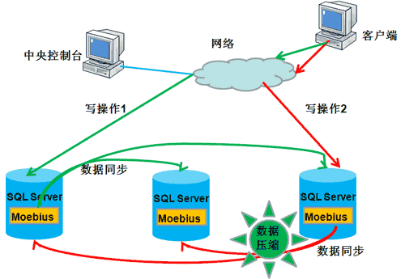
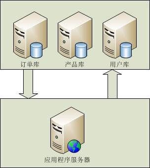

インターネットアプリケーションの広範な普及に伴い、大量データの保存とアクセスがシステム設計のボトルネック問題となっています。大規模なインターネットアプリケーションにとって、毎日100万単位、さらには数億のPVは間違いなくデータベースにかなりの高負荷をもたらします。これはシステムの安定性と拡張性に極めて大きな問題を引き起こします。
一、負荷分散技術
負荷分散クラスタは、互いに独立したコンピュータシステムのグループで構成され、通常のネットワークまたは専用ネットワークを介して接続され、ルーターで連結されています。各ノードは相互に協力し、負荷を共同で処理し、圧力をバランスさせます。クライアントにとって、クラスタ全体を一台の超高性能な独立サーバーと見なすことができます。
1、実装原理
データベースの負荷分散技術を実装するには、まずデータベースへの接続を制御できるコントロールエンドが必要です。ここでは、データベースとプログラムの直接接続を遮断し、すべてのプログラムがこの中間層にアクセスし、その後中間層がデータベースにアクセスします。これにより、特定のデータベースへのアクセスを具体的に制御でき、データベースの現在の負荷に応じて効果的なバランス戦略を採用し、毎回どのデータベースに接続するかを調整できます。
2、複数データベースのデータ同期の実装
負荷分散にとって最も重要なのは、すべてのサーバーのデータがリアルタイムに同期されていることです。これはクラスタに必須です。なぜなら、データがリアルタイムでなく同期されていない場合、ユーザーがあるサーバーから読み出したデータが別のサーバーから読み出したデータと異なることになり、それは許されないからです。したがって、データベースのデータ同期を実装する必要があります。そうすれば、クエリ時に複数のリソースを利用でき、バランスを実現できます。比較的一般的な方法はMoebius for SQL Serverクラスタです。Moebius for SQL Serverクラスタは、コアプログラムを各マシンのデータベース内に常駐させる方法を採用しています。このコアプログラムはMoebius for SQL Serverミドルウェアと呼ばれ、主な役割はデータベース内のデータ変更を監視し、変更されたデータを他のデータベースに同期することです。データ同期が完了して初めてクライアントは応答を受け取ります。同期プロセスは並行して実行されるため、複数のデータベースへの同期と1つのデータベースへの同期にかかる時間はほぼ同じです。また、同期プロセスはトランザクション環境で完了するため、複数のデータが常に一貫性を保つことが保証されます。Moebiusミドルウェアがデータベース内にホストされているという革新により、ミドルウェアはデータの変更を知るだけでなく、データ変更を引き起こしたSQL文も知ることができ、SQL文のタイプに応じてインテリジェントに異なるデータ同期戦略を採用し、データ同期コストを最小限に抑えます。

データ件数が少なく、データ内容も大きくない場合は、データを直接同期します。
データ件数は少ないが、テキストやバイナリデータなどの大きなデータ型を含む場合は、まずデータを圧縮してから同期し、ネットワーク帯域の占有と転送にかかる時間を削減します。
データ件数が多い場合、ミドルウェアはデータ変更を引き起こしたSQL文を取得し、そのSQL文を解析して実行計画と実行コストを分析し、データを同期するかSQL文を他のデータベースに同期するかを選択します。この状況は、テーブル構造の調整やデータの一括変更を行う場合に非常に役立ちます。
3、長所と短所
(1) 拡張性が高い：システムがより高いデータベース処理速度を必要とする場合、データベースサーバーを追加するだけで拡張できます。
(2) 保守性：あるノードで障害が発生した場合、システムは自動的に障害を検出し、障害ノードのアプリケーションを移行して、データベースの継続的な稼働を保証します。
(3) 安全性：データが複数のサーバーに同期されるため、データセットの冗長性を実現し、複数のデータによって安全性を確保できます。また、データベースを内部ネットワーク内に置くことに成功し、データベースの安全性をより良く保護します。
(4) 使いやすさ：アプリケーションにとって完全に透過的であり、クラスタが公開するのは1つのIPだけです。
(1) Webサーバーの処理能力に応じて負荷を分散することができません。
(2) 負荷分散装置（コントロールエンド）に障害が発生すると、データベースシステム全体がダウンする可能性があります。
二、データベースの読み書き分離
1、実装原理：読み書き分離は簡単に言うと、データベースへの読み取り操作と書き込み操作を異なるデータベースサーバーに分離することです。これにより、データベースの負荷を効果的に軽減でき、IO負荷も軽減できます。マスターデータベースは書き込み操作を提供し、スレーブデータベースは読み取り操作を提供します。実際、多くのシステムでは主に読み取り操作です。マスターデータベースが書き込み操作を行うとき、データはスレーブデータベースに同期される必要があり、これによりデータベースの整合性を効果的に保証できます。

(eBayの読み書き比率は260:1、eBayの読み書き分離)

(マイクロソフトデータベース配布)
2、実装方法：MS Sql serverでは、パブリッシュ定義の方法を使用してデータベースレプリケーションを実装し、読み書き分離を実現できます。レプリケーションは、一組のデータを1つのデータソースから複数のデータソースにコピーする技術であり、1つのデータを複数のストレージサイトに公開する効果的な方法です。レプリケーション技術を使用すると、ユーザーは1つのデータを複数のサーバーに公開できます。レプリケーション技術は、異なる場所に分散したデータが自動的に同期更新されることを保証し、データの一貫性を確保します。SQL SERVERのレプリケーション技術には3つのタイプがあります：スナップショットレプリケーション、トランザクションレプリケーション、マージレプリケーションです。SQL SERVERは主にパブリケーションとサブスクリプションの方法でレプリケーションを処理します。ソースデータがあるサーバーはパブリッシャーサーバーであり、データの公開を担当します。パブリッシャーサーバーは、公開するデータのすべての変更状況のコピーをディストリビューターサーバーにコピーします。ディストリビューターサーバーにはディストリビューションデータベースが含まれ、データのすべての変更を受け取り、これらの変更を保存し、それからこれらの変更をサブスクライバーサーバーに配布します。
3、長所と短所
(1) データのリアルタイム性が低い：データは読み取り専用サーバーにリアルタイムで同期されるわけではありません。データがマスターサーバーに書き込まれた後、次の同期後にのみクエリできます。
(2) データ量が多い場合の同期効率が悪い：単一テーブルのデータ量が多すぎると、挿入や更新はインデックス、ディスクIOなどの問題により、パフォーマンスが非常に低下します。
(3) 複数の（少なくとも2つの）データベースに同時接続する：少なくとも2つのデータベースに接続する必要があり、実際の読み書き操作はプログラムコードで実行されるため、混乱を引き起こしやすいです。
(4) 読み取りは高性能、高信頼性、拡張性を持つ：読み取り専用サーバーは書き込み操作がないため、ディスクIOなどのパフォーマンス問題を大幅に軽減し、効率を大幅に向上させます。読み取り専用サーバーは負荷分散を採用でき、マスターデータベースを複数の読み取り専用サーバーに公開することで、読み取り操作の拡張性を実現します。
三、データベース分割（分散型）
特定の条件を通じて、同じデータベースに格納されているデータを複数のデータベースに分散して保存し、分散ストレージを実現します。ルーティングルールを通じて特定のデータベースにアクセスします。これにより、毎回のアクセスは単一のサーバーではなくN台のサーバーを対象とするため、単一マシンの負荷圧力を軽減できます。
垂直（縦方向）分割：機能モジュールごとに分割することです。例えば、注文データベース、商品データベース、ユーザーデータベースなどに分けます。この方式では、複数のデータベース間でテーブル構造が異なります。
水平（横方向）分割：同じテーブルのデータをブロックに分けて異なるデータベースに保存します。これらのデータベースのテーブル構造は完全に同じです。

（縦方向分割）

（横方向分割）
1、実装原理：垂直分割を使用する場合、主にアプリケーションのタイプがこの分割方式に適しているかどうかを確認する必要があります。例えば、システムを注文システム、商品管理システム、ユーザー管理システムなどに分けることができ、業務システムが比較的明確であれば、垂直分割はデータベースへの圧力を分散するのに効果的です。業務モジュールが不明確で、結合（テーブル関連）度が高いシステムは、この分割方式には適していません。しかし、垂直分割方式はすべての圧力問題を完全に解決できるわけではありません。例えば、5000万件の注文テーブルがある場合、操作すると注文データベースへの圧力は依然として大きいです。このテーブルに新しいデータを追加（insert）する必要がある場合、insert完了後、データベースはこのテーブルに対してインデックスを再構築します。5000万行のデータに対するインデックス構築のシステムオーバーヘッドは無視できません。逆に、このテーブルを100個のテーブルに分割するとします。table_001からtable_100まで、5000万行のデータを平均すると、各サブテーブルには50万行のデータしかありません。このとき、50万行のデータしかないテーブルにinsertした後、インデックスを構築する時間は桁違いに減少し、DBの実行時効率が大幅に向上し、DBの並行処理量が向上します。この分割が水平分割です。
2、実装方法：垂直分割は、分割方式の実装が比較的簡単で、テーブル名に応じて異なるデータベースにアクセスすればよいです。水平分割のルールは多くありますが、ここでは先人のいくつかのポイントをまとめます。
(1) 順序分割：例えば、注文の日付を年に基づいて分割できます。2003年はdb1、2004年はdb2というようにします。もちろん、主キー基準で分割することもできます。
長所：部分的な移行が可能
短所：データ分布が均等ではない。2003年の注文が100万件、2008年が500万件という可能性があります。
(2) ハッシュ剰余分割：user_idをハッシュ化します（または、user_idが数値型の場合はuser_idの値を直接使用してもかまいません）。次に特定の数字を使用します。例えば、アプリケーションで1つのデータベースを4つのデータベースに分割する必要がある場合、4という数字でuser_idのハッシュ値に対して剰余演算を行います。つまり user_id % 4 です。これにより、毎回の演算には4つの可能性があります：結果が1のときはDB1に対応、結果が2のときはDB2に対応、結果が3のときはDB3に対応、結果が0のときはDB4に対応します。これで、データを非常に均等に4つのDBに分散できます。
長所：データ分布が均等
短所：データ移行のときに面倒；マシンの性能に応じてデータを分散できない。
(3) 認証データベースにデータベース設定を保存する
つまり、DBを1つ作成し、このDBにuser_idからDBへのマッピング関係を単独で保存します。データベースにアクセスするたびに、まずこのデータベースを1回クエリして具体的なDB情報を取得し、それから必要なクエリ操作を実行できます。
長所：柔軟性が高く、1対1の関係
短所：毎回のクエリの前に追加のクエリが1回必要であり、一定のパフォーマンス損失が発生します。
出典：http://www.codeceo.com/article/db-solutions.html
クリックしてノートを共有
<p style="font-size:14px;">ノートはこの記事の内容を拡張したものである必要があります！</p><br> <p style="font-size:12px;"><a href="../tougao.html" target="_blank">記事の投稿は、こちらをクリック</a></p> <p style="font-size:14px;"><a href="./runoob-user-test-intro.html" target="_blank">登録招待コードの取得方法</a></p> <h3 class="text-muted"><i class="fa fa-info-circle" aria-hidden="true"></i> ノートを共有する前に<a href=".." class="runoob-pop">ログイン</a>が必要です！</h3> <p><a href="./runoob-user-test-intro.html" target="_blank">登録招待コードの取得方法</a></p>